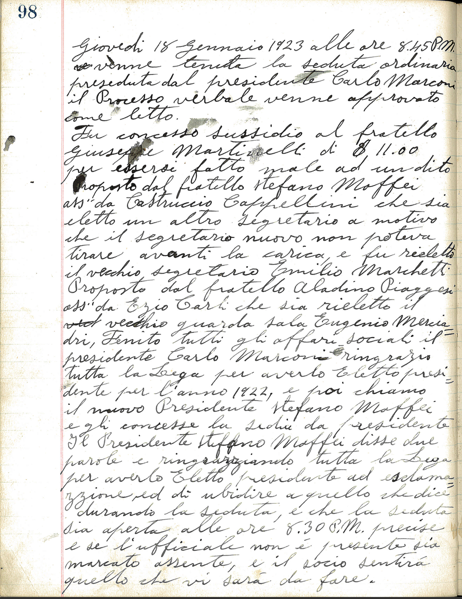
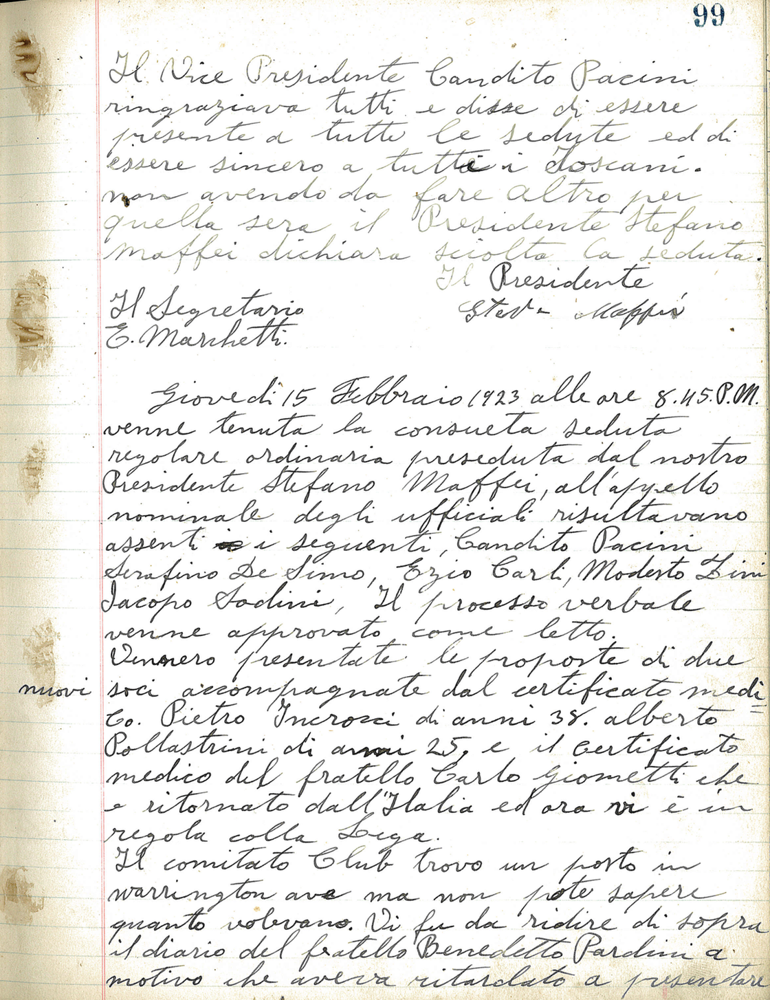
Giovedi 18 Gennaio 1923 alle ore 8.45 P.M.
venne tenute la
seduta ordinaria
preseduta dal predidente Carlo
Marconi
il Processo verbale venne approvato
come letto.
Fu concesso sussidio al fratello
Giuseppe Martinelli di $11.00
per essersi fatto male ad un
dito.
Proposto dal fratello Stefano Maffei
ass. da
Catruccio
Cappellini che sia
eletto un altro segretario a motivo
che il segretario nuovo non poteva
tirare avanti la carica, e fu rieletta
.
Proposto dal fratello Aladino Piaggesi
ass. da
Ezio Carli che sia
rieletto il
vecchio guarda
sala Eugenio Mercia-
dri, Finito tutti gli affari
sociali il
presidente Carlo Marconi ringrazio
tutta la Lega per averlo Eletto presi-
dente
per l’anno 1922, e poi chiamo
il nuovo Presidente Stefano Maffei
e gli
concesse la sedia da presidente
Il Presidente Stefano Maffei disse due
parole e ringrazziando tutta la Lega
per averlo Eletto presidente ad
esclama-
zzione, ed di ubidire a quello che dice
durando la seduta, e
che la seduta
sia aperta alla ore 8.30 P.M. precise
e se l’ufficiale non
e’ presente sia
marcate assente, e il socio sentira’ quello che vi sara’ di fare.
Il Vice Presidente Candito Pacini
ringraziava tutti e disse di essere
presente a tutti le sedute ed di
essere sincero a tutti i toscani.
non avendo da fare altro per
quella sera il
Presidente Stefano
Maffei dichiara sciolta la seduta.
Il Presidente
Il Segretario Stefano Maffei
E. Marchetti
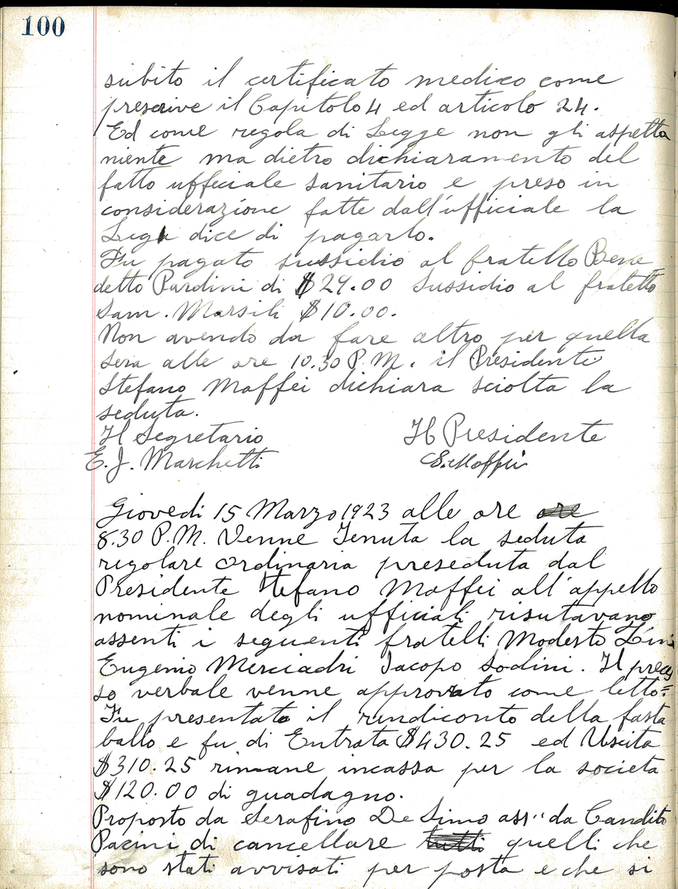
Giovedi 15 Febbraio 1923 alle ore 8.45 P.M.
venne tenuta la
consueta seduta
regolare ordinaria preseduta dal
nostro
Presidente Stefano Maffei,
all’appello
nominale degli ufficiali risultavano
assenti i
seguenti,
Candito Pacini
Serafino De Simo,
Ezio Carli,
Modesto Zini
Jacopo Sodini,
Il processo verbale
venne approvato come letto.
Vennero presentate le proposte di due
nuovi soci accompagnate dal
certificato medi-
co
Pietro Incrocci di anni 38.
Alberto
Pollastrini di anni
25,
e il certificato
medico del fratello
Carlo giometti che
e ritornato dall’Italia ed ora vi e
in
regola colla Lega.
Il comitato Club trovo un posto in
warrington ave. ma non pote
sapere
quanto volevano. Vi fu da ridire di sopra
il diario del fratello Benedetto Pardini a
motivo che
aveva ritardato a presentare
subito il certificato medico come
prescrive il Capitolo 4 ed
articolo 24.
Ed come regola di Legge non gli aspetta
niente ma dietro
dichiaramento del
fatto ufficiale sanitario e preso in
considerazione
fatte dall’ufficiale la
Lega dice di pagarlo.
Fu pagato sussidio al fratello Bene-
detto Pardini di $29.00
Sussidio al fratello
Sam Marsili
$10.00.
Non avendo da fare altro per quella
sera alle ore 10.30 P.M.
il Presidente
Stefano Maffei
dichiara sciolta la
seduta.
Il Segretario Il Presidente
E.J. Marchetti S. Maffei
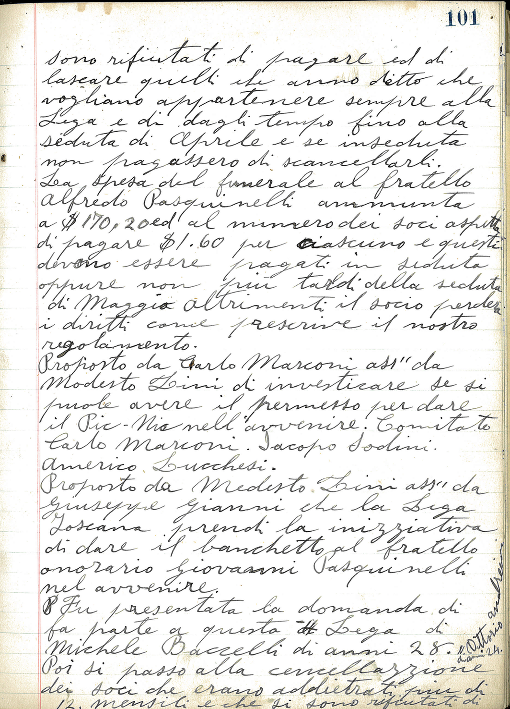
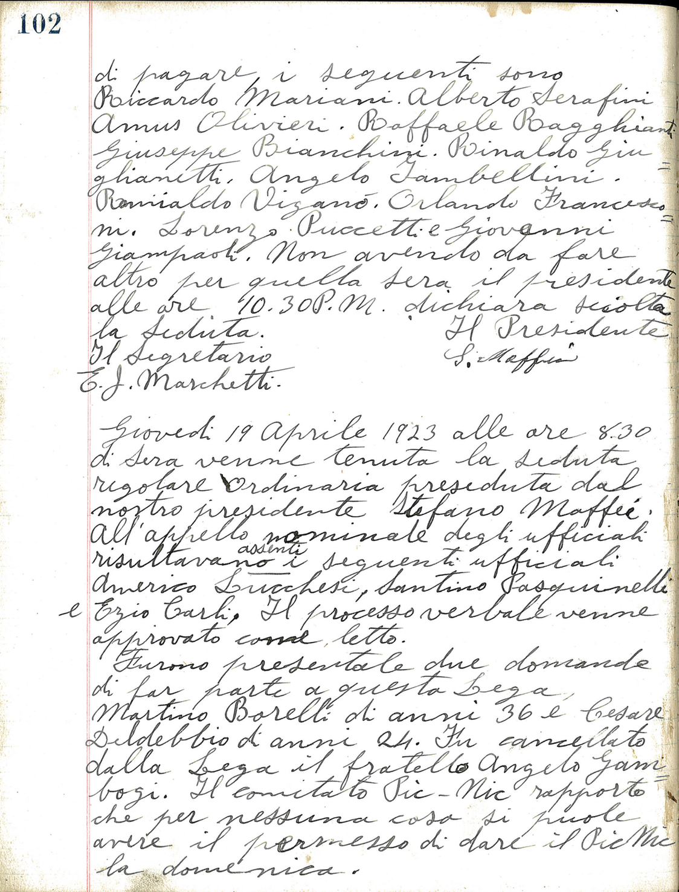
Giovedi 15 Marzo 1923 alle ore ore 8.30 P.M. Venne
Tenute la seduta
regolare ordinaria preseduta dal
Presidente Stefano Maffei
all’appello
nominale degli ufficiali risultavano
assenti i
sequenti fratelli
Modesto Zini
Eugenio Merciadri
Jacopo Sodini.
Il Preces-
so verbale venne approvato come letto.
Fu presentata
il rendiconto della fasta
ballo e fu di Entrata $430.25 ed Uscita
$310.25 rimane in cassa per la societa
$120.00 di guadagno.
Proposto da Serafino De simo ass. da Candito
Pacini di cancellare tutti quelli che
sono stati avvisati per posta e
che si
sono rifiutati di pagare ad di
lascare quelli che anno detto
che
vogliano appartenere sempre alla
Lega e di dagli tempo fino
alla
seduta di Aprile e se inseduta
non pagassero di
scancellarli.
La spesa del funerale al fratello
Alfredo Psquinelli
ammunta
a $170.20 ed al numero
dei soci aspetta
di pagare $1.60 per ciascuno e quanti
devono essere
pagati in seduta
oppore non piu’ tardi della seduta
di Maggio
Altrimenti il socio perdera
i diritti come prescrive il nostro
regolamento.
Proposto da Carlo Marconi ass da
Modesto Zini di investicare
se si
puole avere il permesso per dare
il Pic-Nic nell
avvenire.
Comitato
Carlo Marconi.
Jacopo Sodini.
Americo Lucchesi.
Proposto da Modesto Zini ass. da
Giuseppe Gianni che la
Lega
Toscana prendi la inizziativa
di dare il banchetto al fratello
onorario Giovanni
Pasquinelli
nel avvenire.
Fu presentata la domanda di
fa parte a questa Lega di
Michele Baccelli di anni 28.
e Vittorio Andreini di anni
24
Poi si passo alla cancellazzione
dei soci che erano addietrati piu
di
12 mensili e che si sono rifiutati di
di pagare i seguenti sono
Riccardo Mariani.
Alberto Serafini
Amus Olivieri.
Raffaele Ragghianti
Giuseppe Bianchini.
Rinaldo Giu-
glianetti.
Angelo Tambellini.
Ramialdo Vigano’.
Orlando Francesco-
ni.
Lorenzo Puccetti
e Giovanni
Giampaoli.
Non avendo da fare
altro per quella sera il
presidente
alle ore 10.30 P.M. dichiara sciolta
la Seduta. Il Presidente
Il Segretario
S. Maffei
E.J. Marchetti
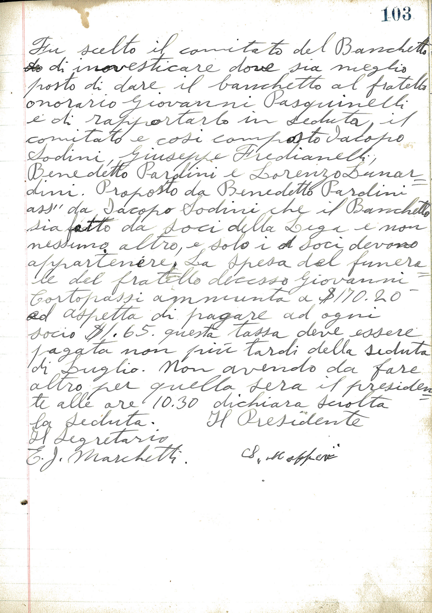
Giovedi 19 Aprile 1923 alle ore 8.30
di sera venne tenuta la
seduta
regolare Ordinaria preseduta dal
nostro
presidente Stefano Maffei.
All’appello nominale degli ufficiali
risultavano assenti i seguenti
ufficiali
Americo Lucchesi,
Santino Pasquinelli
e Ezio Carli.
Il processo verbale venne
approvato come letto.
Furono presentate due domande
di far parte a questa Lega,
Martino Barelli di anni 36
e Cesare
Deldebbio di anni
24.
Fu cancellto
dalla Lega
il fratello Angelo Gam-
bogi.
Il comitato Pic-Nic rapporto
che per nessuna cosa si puole
avere
il permesso di dare il Pic-Nic
la domenica.
Fu scelto il comitato del Banchetto
de di investicare dove sia meglio
posto di
dare il banchetto al fratello
onorario
Giovanni Pasquinelli
e di rapportarlo in seduta, il
comitato e cosi composto
Jacopo
Sodini,
Giuseppe Fredianelli,
Benedetto Pardini
e Lorenzo Lunar-
dini.
Proposto da Benedetto Pardini
ass. da Jacopo Sodini che il
Banchetto
sia fatto da soci della Lega e non
nessuno altro, e solo i
d Soci devono
appartenere.
La spesa del funera-
le del Fratello decesso Giovanni
Cortopassi ammunta a $170.20
ed aspetta di pagare ad ogni
socio $1.65. questa
tassa deve essere
pagata non piu’ tardi della seduta
di Luglio.
Non avendo da fare
altro per quella sera il
presiden-
te alle ore 10.30 dichiara sciolta
la Seduta. Il
Segretario Il Presidente
E.J. Marchetti
S. Maffei
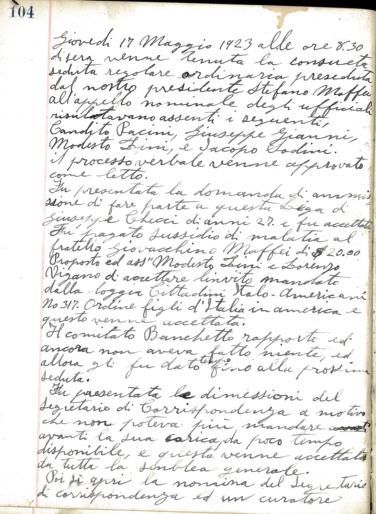
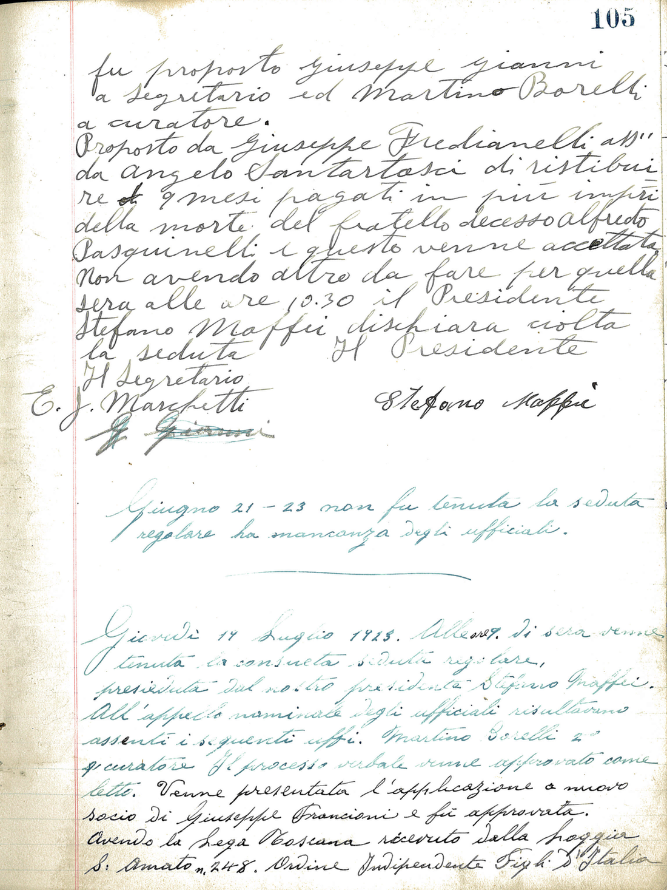
Giovedi 17 Maggio alle ore 8.30
di sera venne tenuta la
consueta
seduta regolare ordinaria preseduta
dal nostro presidente Stefano Maffei
All’appello nominale degli ufficiali
risultavano assenti i
seguenti,
Candito Pacini,
Giuseppe Gianni,
Modesto Zini,
e Jacopo Sodini.
il processo verbale venne approvato
come letto.
Fu presentata la domanda di ammis-
sione di fare parte a questa Lega
di
Giuseppe Checci di anni 27
Fu pagato sussidio di malatia al
fratello Giovacchino
Maffei di $20.00
Proposto ed ass. Modesto Zini e Lorenzo
Vigano’ di accettare linvito
mandato
dalla loggia Cittadini Italo-Americani
No. 317. Ordine figli
d’Italia in america e
questo venne accettata.
Il comitato
Banchetto rapporto ed
ancora non aveva fatto niente, ed
allor gli fu
dato tempo fino alla prossima
seduta.
Fu presentata le dimessioni del
Segretario di Corrispondenza a
motivo
che non poteva piu’ mandare avanti
avanti la sua carica, da poco tempo
disponibile, e questa venne
accettata
da tutta la semblea generale.
Poi si apri la nomina del
Segretario
di corrispondenza ed un curatore
fu proposto Giuseppe
Gianni
a segretario ed Martino Borelli
a curatore.
Proposto da Giuseppe Fredianelli ass.
da Angelo Santarlasci di
ristribui-
re 9 mesi pagati in piu’ impri-
della morte del fratello decesso Alfredo
Pasquinelli e questo venne accettata
Non avendo altro da fare per quella
sera alle 10.30 il Presidente
Stefano Maffei dichiara
ciolta
la seduta.
Il Segretario Il Presidente
E.J. Marchetti
Stefano Maffei
G. Gianni
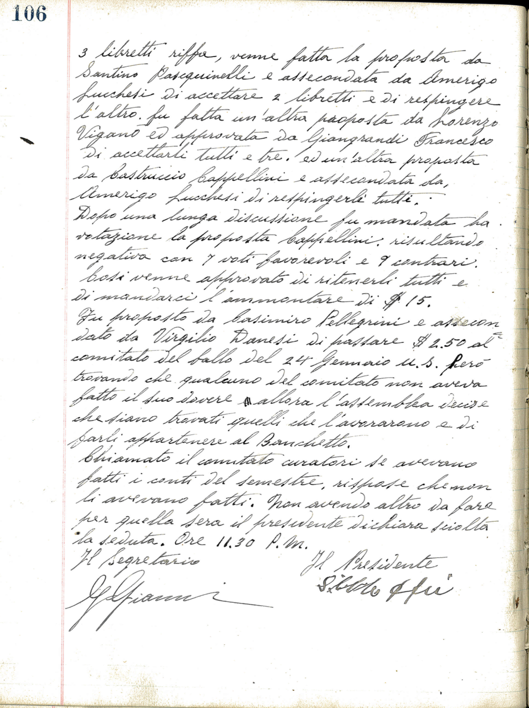
Giovedi 19 Luglio 1923. Alle ore 9. Di sera venne
Tenuta la
consueta seduta regolare,
Presieduta dal nostro
presidente Stefano Maffei.
All’appello nominale degli ufficiali risultavano
Assenti i seguenti
uffi.
Martino Borelli 2o
curatore
Il proceso verbale venne approvato come
Letto.
Venne presentata l’applicazione a nuovo
Socio di
Giuseppe Francioni
e fu’ approvata.
Avendo >la Lega Toscana ricevuto dalla Loggia
S. Amato n. 248.
Ordine Indipendente Figli d’Italia
3 libretti riffa, venne fatta la proposta
Santino Pasquinelli e
assecondata da Amerigo
Lucchesi di accettare 2 libretti e di respingere
l’altro.
fu fatta un’altra proposta da Lorenzo
Vigano’ ed approvata
da Giangrandi
Francesco
di accettarli tutti e tre.
ed un’altra proposta
da Castruccio Cappellini e
assecondata da,
Amerigo Lucchesi di
respingerli tutti.
Dopo una lunga discussione fu mandata la
votazione la proposta Cappellini. risultando
negativa con 7 voti favorevoli e
9 contrari.
Cosi venne approvato di ritenerli tutti e
di mandarci
l’immontare di $15.
Fu proposto da Casimiro Pellegrini e assecon
dato da
Virgilio Danesi di
passare $2.50 al
comitato del ballo del 24 Gennaio U.S. Pero’
trovando che qualcuno del comitato non aveva
fatto il suo dovere allora
l’assemblea decise
che siano trovati quelli che l’avorarono e di
farli appartenere al Banchetto.
Chiamato il comitato curatori se
avevano
fatti i conti del semestre, rispose che non
li avevano fatti.
Non avendo altro da fare
per quella sera il
presidente dichiara sciolta
la seduta. Ore 11.30 P.M.
Il
Segretario Il Presidente
G. Gianni
S. Maffei
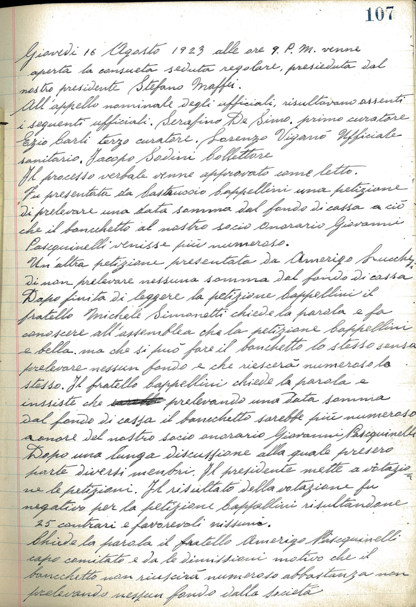
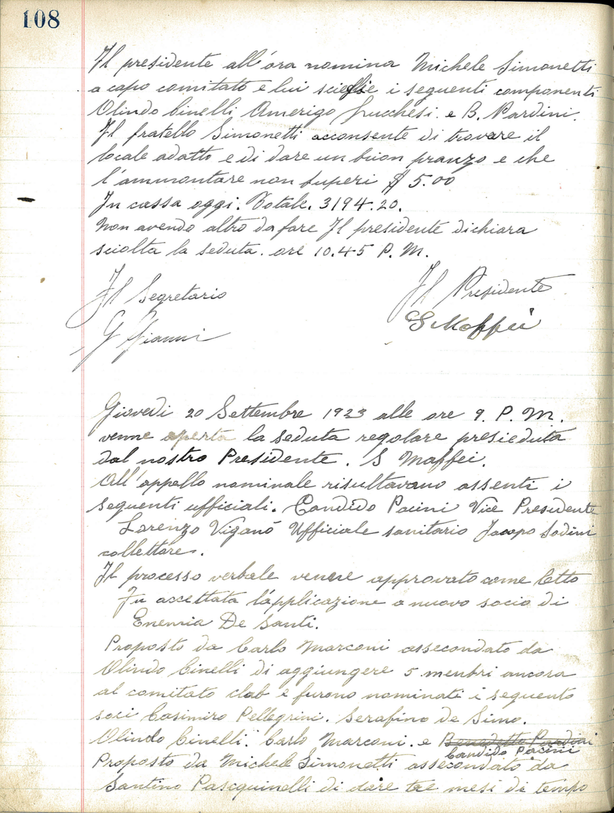
Giovedi 16 Agosto 1923 alle ore 9 P.M. venne
aperta la consueta
seduta regolare, presieduta dal
nostro presidente
Stefano Maffei.
All’appello nominale degli ufficiali, risultavano assenti
i seguenti
ufficiali.
Serafino De Simo. primo
curatore
Ezio Carli terzo curatore.
Lorenzo Vigano’ Ufficiale
sanitario.
Jacopo Sodini Collettore
Il processo verbale venne approvato come letto.
Fu presentata da Castruccio Cappellini una petizione
di
prelevare una data somma dal fondo di cassa a cio’
che il banchetto
al nostro socio onorario Giovanni
Pasquinelli venisse piu’ numeroso.
Un’altro petizione presentata da Amerigo Lucchesi
di non
prelevare nessuna somma dal fondo di cassa
dopo finita di leggere la
petizione Cappellini
il
fratello Michele Simonetti chiede
la parola e fa
conoscere all’assemblea che la petizione Cappellini
e bella ma che si puo’ fare il
banchetto lo stesso sensa
prelevare nessun fondo e che riescera’ numeroso
lo
stesso. Il fratello Cappellini
chiede la parola e
inssiste che prell prelevando una
data somma
dal fondo di cassa il banchetto sarebbe piu’ numeroso
a onore
del nostro socio onorario Giovanni
Pasquinelli
dopo una lunga discussione alla quale presero
parte diversi membri. Il presidente mette a votazio-
ne le petizioni. Il risultato della votazione fu
negativo per la petizione
Cappellini risultandone
25
contrari e favorevoli nissuni.
Chiede la parola il fratello Amerigo Pasquinelli
capo
comitato e da le dimissioni motivo che il
banchetto non riuscira’ numeroso
abbastanza non
prelevando nessun fondo dalla societa’
Il presidente all’ora nomina Michele Simonetti
a capo comitato e lui scieglie
i seguenti componenti
Olindo Cinelli,
Amerigo Lucchesi
e B. Pardini.
Il fratello Simonetti acconsente di trovare
il
locale adatto e di dare un buon pranzo e che
l’ammontare non superi
$5.00
In casso oggi: Totale. 3194.20
Non avendo altro da fare Il presidente
dichiara
sciolta la seduta. ore 10.45 P.M.
Il Segretario Il Presidente
G. Gianni
S. Maffei
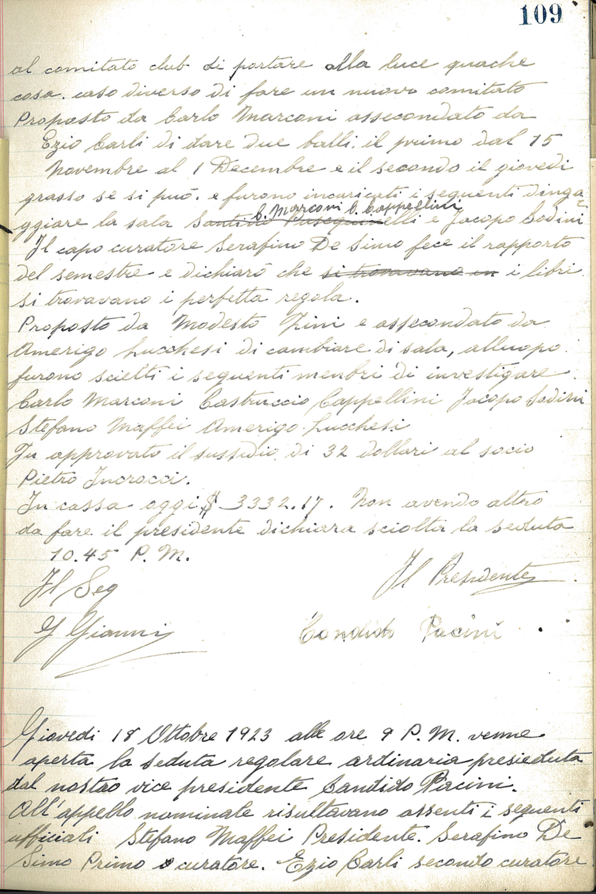
Giovedi 20 Settembre 1923 alle ore 9 P.M.
venne aperta la
seduta regolare presieduta
dal nostro Presidente. S Maffei.
All’appello nominale risultavano assenti i
seguenti
ufficiali.
Candido Pacini Vice Presidente
Lorenzo Vigano’ Ufficiale
sanitario
Jacopo Sodini
collettore.
Il processo verbale venne approvato come letto
Fu accettata l’applicazione a nuovo socio di
Enemia De Santi
Proposto da Carlo Marconi assecondato da
Olindo Cinelli di
aggiungere 5 membri ancora
al comitato club e
furono nominati i seguenti
soci
Casimiro Pellegrini.
Serafino De Simo.
Olindo Cinelli.
Carlo Marconi.
e Benedetto Pardini
Candito Pacini
Proposto da Michele Simonetti assecondato da
Santino Pasquinelli
di dare tre mesi di tempo
al comitato club di portare alla luce quache
cosa. caso
diverso di fare un nuovo comitato
Proposto da Carlo Marconi assecondato da
Ezio Carli di dare due
balli, il primo dal 15
novembre al 1 Dicembre e il secondo il giovedi
grasso se si puo’. e
furono incaricati i seguenti dinga-
ggiare la sala Santino Pasquinelli
C. Marconi
C. Cappellini
e Jacopo Sodini
Il capo curatore Serafino De Simo fece il
rapporto
del semestre e dichiaro’ che si trovavano
in i libri
si trovavano i perfetta regola.
Proposto da Modesto Zini e assecondato da
Amerigo Lucchesi di
cambiare di sala,
alluopo
furono scielti i seguenti membri di investigare
Carlo Marconi
Castruccio Cappellini
Jacopo Sodini
Stefano Maffei
Amerigo Lucchesi
Fu approvato il sussidio di 32 dollari al socio
Pietro
Incrocci.
In cassa oggi $3332.17. Non avendo altro
da fare il presidente dichiara sciolta la seduta
10.45
P.M.
Il Seg Il Presidente
G. Gianni
Candito Pacini
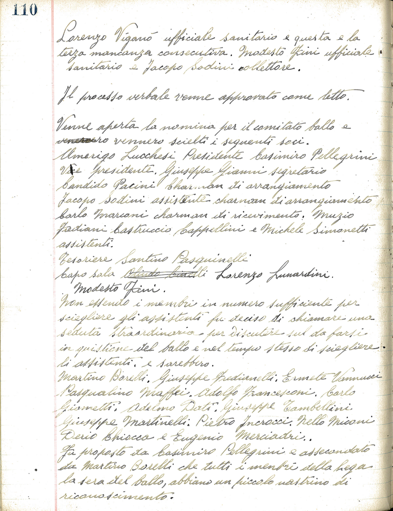
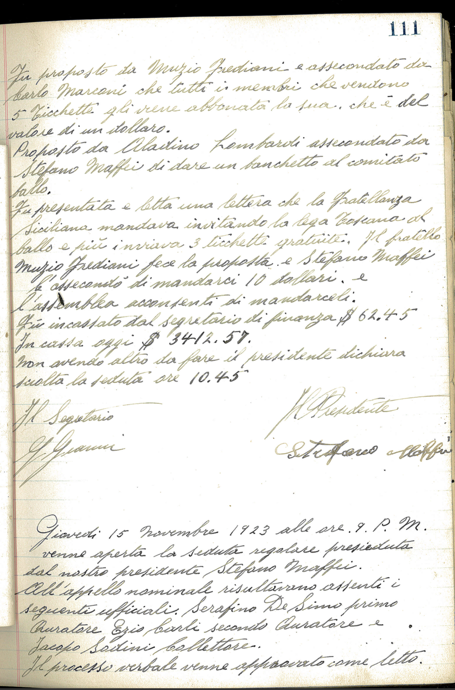
Giovedi 18 Ottobre 1923 alle ore 9 P.M. venne
aperta la seduta
regolare ordinaria presieduta
dal nostro vice presidente Candito Pacini.
All’appello nominale risultavano assenti i seguenti
ufficiali
Stefano Maffei Presidente.
Serafino De
Simo Primo
curatore.
Ezio Carli secondo curatore
Lorenzo Vigano’ ufficiale sanitario e
questo e la
terza mancanza consecutiva.
Modesto Zini ufficiale
sanitario
e Jacopo Sodini collettore.
Il processo verbale venne approvato come letto.
Venne aperta la nomina per il comitato ballo e
vennero vennero scielti i seguenti soci.
Amerigo Lucchesi
Presidente
Casimiro Pellegrini
Vice presidente.
Giuseppe Gianni
segretario
Candito Pacini
Charman di
arrangiamento
Jacopo Sodini
assistente charman di
arrangiamento
Carlo Marconi
charman di
ricevimento.
Muzio
Frediani
Castruccio
Cappellini
e Michele Simonetti
assistenti.
Tesoriere
Santino Pasquinelli
Capo sala
Olindo Cinelli
Lorenzo Lunardini
Modesto Zini
Non essendo i membri in numero sufficiente per
sciegliere gli
assistenti fu deciso di chiamare una
seduta straordinaria per discutere
sul farsi
in quistione del ballo e nel tempo stesso di sciegliere
li assistenti e sarebbero.
Martino Borelli.
Giuseppe Fredianelli.
Erneste Vannucci
Pasqualino Maffei.
Adolfo Francesconi.
Carlo
Giometti.
Adelmo Dati.
Guiseppe Tambellini
Giuseppe Martinelli.
Pietro Incrocci.
Nello Miconi
Derio Chiocca
e Eugenio Merciadri.
Fu proposto da Casimiro Pellegrini e assecondato
da
Martino Borelli che
tutti i membri della Lega
la sera del ballo, abbiano un piccolo nastrino
di
riconoscimento.
Fu proposto da Muzio Frediani e assecondato da
Carlo Marconi che tutti i
membri che vendono
5 Ticchette gli viene abbonata la sua, che e’ del
valore di un dollaro.
Proposto da Aladino Lombardi assecondato da
Stefano Maffei di dare un
banchetto al comitato
ballo.
Fu presentata e letta una lettera
che la Fratellanza
Siciliana mandava invitando la lega Toscana al
ballo
e piu’ inviava 3 ticchette gratuite. Il fratello
Muzio Frediani fece la
proposta e Stefano
Maffei
l’assecondato’ di mandarci 10 dollari. e
l’assemblea acconsenti di mandarceli.
Fu incassato dal segretario di
finanza $62.45
In cassa oggi $ 3412.57.
Non avendo altro da fare il presidente
dichiara
sciolta la seduta ore 10.45
Il Segretario Il Presidente
G. Gianni
Stefano Maffei
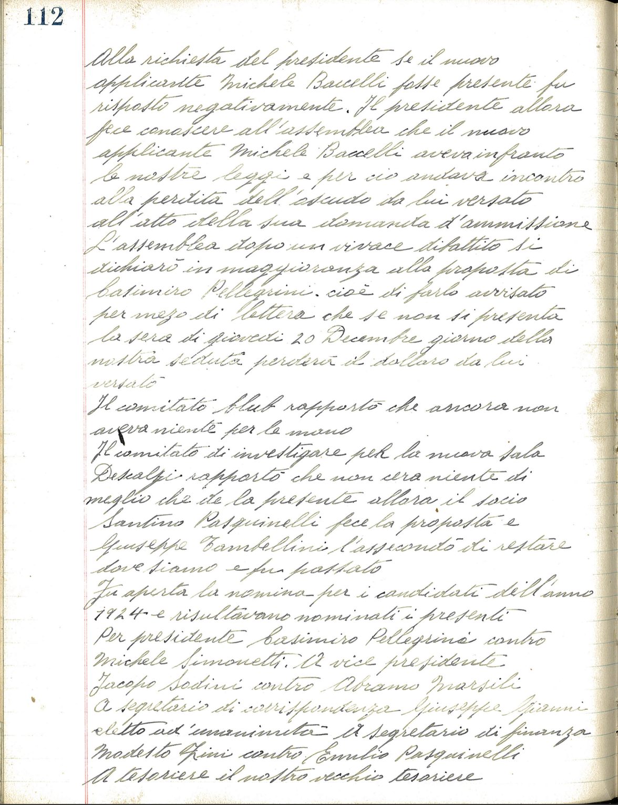
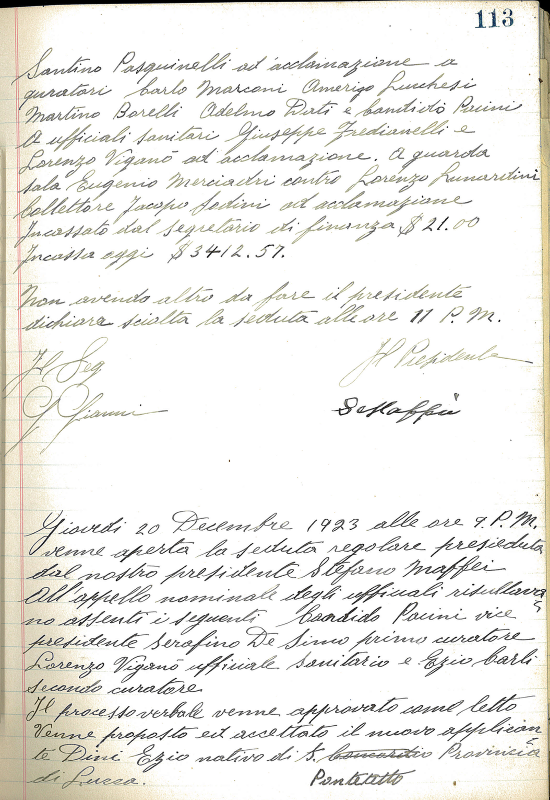
Giovedi 15 Novembre 1923 alle ore. 9. P.M.
venne aperta la
seduta regolare presieduta
dal nostro presidente Stefano Maffei.
all’appello nominale risultavano assenti i
seguenti
ufficiali.
Serafino De Simo primo
Curatore
Ezio Carli secondo Curatore
e
Jacopo Sodini Collettore.
Il processo verbale venne approvato come letto.
Alla richiesta del presidente se il nuovo
applicante Michele Baccelli fosse
presente fu
risposto negativamente. Il presidente
allora
fece conoscere all’assemblea che il
nuovo
applicante Michele Baccelli aveva infranto
la nostre
leggi e per cio andava incontro
alla perdita dell’ascudo da lui versato
all’atto della sua domanda d’ammissione
L’assemblea dopo un vivace dibattito si
dichiaro’
in maggioranza alla proposta di
Casimiro Pellegrini.
cioe di farlo avvisato
per mezo di lettera che se non si presenta
la
sera di giovedi 20 Decembre giorno della
nostra seduta perdera’ il dollaro
da lui
versato.
Il comitato Club rapporto’ che ancora non
aveva niente per le mano
Il comitato di investigare per la nuova sala
Descalpi rapporto’ che non cera niente di
meglio che de la presente allora
il socio
Santino Pasquinelli fece la
proposta e
Giuseppe Tambellini
l’assecondato’ di restare
dove siamo e fu passato
Fu aperta la
nomina per i candidati dell’anno
1924 e risultavano nominati i presenti
Per presidente Casimiro Pellegrini contro
Michele Simonetti . A vice presidente
Jacopo Sodini contro Abramo Marsili
A segretario di corrispondenza Giuseppe Gianni
eletto ad’unanimita’ A
segretario di finanza
Modesto Zini contro Emilio Pasquinelli
A tesoriere il nostro vecchio tesoriere
Santino Pasquinelli ad’acclamazione a
quratori
Carlo Marconi
Amerigo Lucchesi
Martino Barelli
Adelmo Dati e Candido
Pacini
A ufficiali sanitari Giuseppe Fredianelli e
Lorenzo Vigano’ ad acclamazione. A guarda
sala Eugenio Merciadri contro Lorenzo Lunardini
Collettore Jacopo Sodini ad acclamazione
Incassato dal
segretario di finanza $21.00
Incassa oggi $3412.57
Non avendo altro da fare il presidente
dichiara sciolta la seduta alle ore 11 P.M.
Il Seg Il Presidente
G. Gianni
S. Maffei
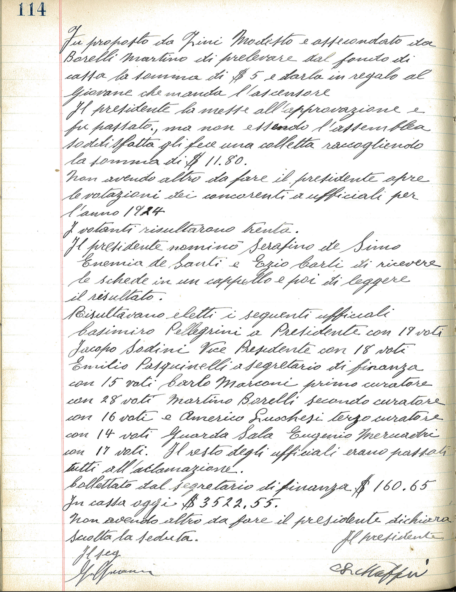
Giovedi 20 Dicembre 1923 alle ore 9. P.M.
venne aperta la seduta regolare presieduta
dal nostro presidente Stefano Maffei
All’appello nominale degli ufficiali risultava-
no assenti i
seguenti
Candido Pacini vice
presidente
Serafino De Simo primo
curatore
Lorenzo Vigano’ ufficiale
sanitario
e Ezio Carli
secondo
curatore
Il processo verbale venne approvato come letto
Venne proposto ed accettato il nuovo applican-
te
Dini Ezio
nativo di S. Concordio Pontetetto Provincia
di Lucca.
Fu proposto da Zini Modesto e assecondato da
Barelli Martino di
prelevare dal fondo di
cassa la somma di $5 e darla in regalo al
giovane che manda l’ascensore
Il presidente la messe all’approvazione e
fu
passato, ma non essendo l’assemblea
soddisfatta gli fece una colletta
raccogliendo
la somma di $11.80
Non avendo altro da fare il presidente apre
le votazioni dei concorenti a
ufficiali per
l’anno 1924
I votanti risultarono trenta.
Il presidente nomino’ Serafino de
Simo
Enemia de Santi e Ezio Carli di ricevere
le schede in
un cappello e poi di leggere
il risultato.
Risultavano eletti i seguenti ufficiali
Casimiro Pellegrini a Presidente con 19 voti
Jacopo Sodini
Vice Presidente con 18
voti
Emilio Pasquinelli a segretario di finanza
con
15 voti
Carlo Marconi primo curatore
con 28
voti
Martino Borelli secondo curatore
con 16
voti
e Americo Lucchesi terzo curatore
con 14
voti
Guarda Sala
Eugenio Merciadri
con 17
voti.
Il resto degli ufficiali erano passati
tutti all’aclamazione.
Collettato dal segretario di finanza $160.65
In cassa oggi $3522.55.
Non avendo altro da fare il presidente
dichiara
sciolta la seduta. Il presidente
Il Seg G.
Gianni
S. Maffei